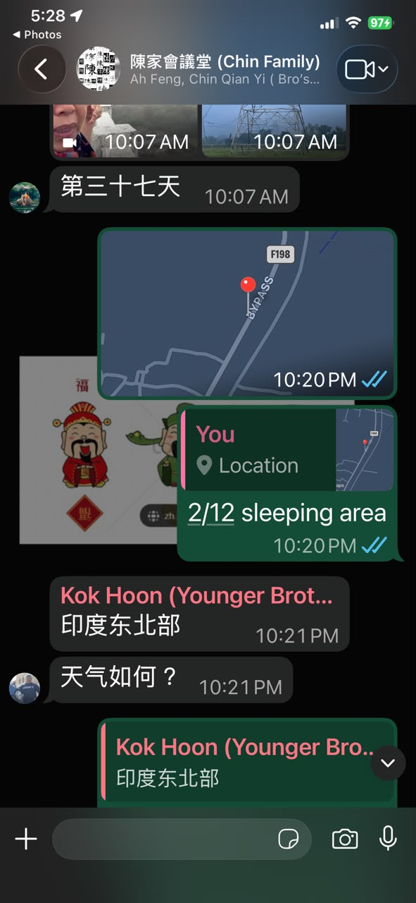

中文说明
一个人上路，不代表失联。
306 天 solo overland journey 看起来很自由，好像我只是开着 Toyotaki 一路往前。 但其实，在这趟旅程背后，有很多看不见的 discipline。
每天晚上，只要我找到过夜地点，我都会把 exact location 发到 family WhatsApp group。 让家人知道我今晚停在哪里、在哪个区域、是不是已经安全停下。
有时候我也会告诉他们天气、地区、当天是第几天，或者现在大概在哪一个国家的哪一段路。 这不是为了制造紧张感，而是为了让 solo journey 不变成 untraceable journey。
我还有其他 communication traces： 例如 sponsor 的 daily mileage report，还有不定时 WhatsApp 给一些朋友或相关的人， 让他们知道我现在走到哪里。
所以，solo 并不是完全消失。 Solo 是自己做决定、自己开车、自己面对路上的问题； 但同时，也要留下足够的安全线索，让关心你的人知道你还在路上。
English Memory Summary
Solo, but not untraceable.
The 306-day solo overland journey looked free from the outside, but it was supported by invisible discipline. Every night, once Tuzi found a place to sleep, she shared her exact location with her family WhatsApp group.
This nightly ritual helped her family know where Toyotaki had stopped, which region she was in, and whether she had safely settled for the night.
Alongside this, she also maintained other communication traces: daily mileage reports for the sponsor, and occasional WhatsApp updates to selected people. The journey was solo, but it was never meant to be untraceable.
Heart Statement
自由也需要留下线索。
我可以一个人开车去很远的地方， 但我不应该让关心我的人完全不知道我在哪里。
每晚发 location，看起来只是一个小动作。 可是这就是 solo journey 背后的安全线。
Solo did not mean disappearing. Every night, I left a small trace of where I was.